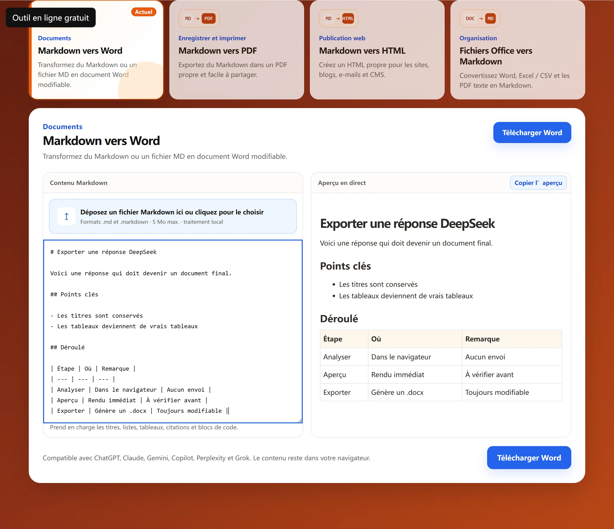

IA vers Word
Copier une réponse d’IA vers Word sans perdre la mise en forme
Le collage direct modifie souvent les espacements, l’indentation des listes et les bordures des tableaux. Une méthode plus fiable : préserver la structure Markdown de la réponse, la vérifier en aperçu, puis exporter un vrai fichier DOCX.

Ce que le presse-papiers retient vraiment
La même commande « copier » produit un Markdown différent selon la plateforme d’origine, et cette différence décide de la propreté du document final.
| Copié depuis | Ce que contient le presse-papiers | À vérifier après le collage |
|---|---|---|
| ChatGPT | Titres et listes en Markdown, tableaux en tubes | Les blocs de code contenant des lignes vides |
| Claude | Les passages cités arrivent en citations | Les citations imbriquées peuvent paraître plus profondes que prévu |
| Gemini | Les tableaux arrivent parfois en texte séparé par des tabulations | Convertissez ces lignes en tableau à tubes avant de générer le fichier |
| Une application mobile | Du texte enrichi sans marqueurs Markdown | Les marqueurs de titres peuvent manquer entièrement |
Quand la copie perd sa structure
- Utilisez l’action « copier en Markdown » de la plateforme quand elle existe ; elle préserve les marqueurs de titres.
- Si seul le texte enrichi est disponible, collez dans l’éditeur et rajoutez les marqueurs
#sur les lignes qui doivent être des titres. - Images et graphiques ne passent jamais par le presse-papiers : exportez-les séparément.
Limites à connaître
- L’outil reproduit la structure, pas le thème visuel de la plateforme d’origine.
- Les listes numérotées reprennent la numérotation là où une nouvelle liste commence ; les longues réponses à la numérotation interrompue demandent une vérification manuelle.
- Les notes de bas de page sont conservées en texte brut, et non en objets de note Word.
Questions sur la copie depuis les chats IA
Pourquoi les titres ont-ils disparu après le collage ?
La copie en texte enrichi supprime les marqueurs Markdown. Utilisez l’action « copier en Markdown » de la plateforme, ou rajoutez des # sur les lignes qui doivent devenir des titres.
De quelles plateformes puis-je coller ?
Toute source qui fournit du texte : le résultat dépend seulement de savoir si le presse-papiers contient du Markdown ou des paragraphes bruts.
Plusieurs réponses peuvent-elles partager un document ?
Oui. Séparez chaque réponse par un titre pour que le document garde un plan lisible.
Si le résultat n’est pas correct
- Le texte en gras reste littéral. Les astérisques sont arrivés comme caractères : le presse-papiers contenait du texte brut avec marqueurs visibles, et non de l’emphase rendue.
- Les citations sont devenues des paragraphes ordinaires. Le préfixe
>manque ; rajoutez-le sur la première ligne de chaque bloc cité. - Le code en ligne a perdu sa mise en forme. Les accents graves doivent coller directement au texte, sans espace à l’intérieur.